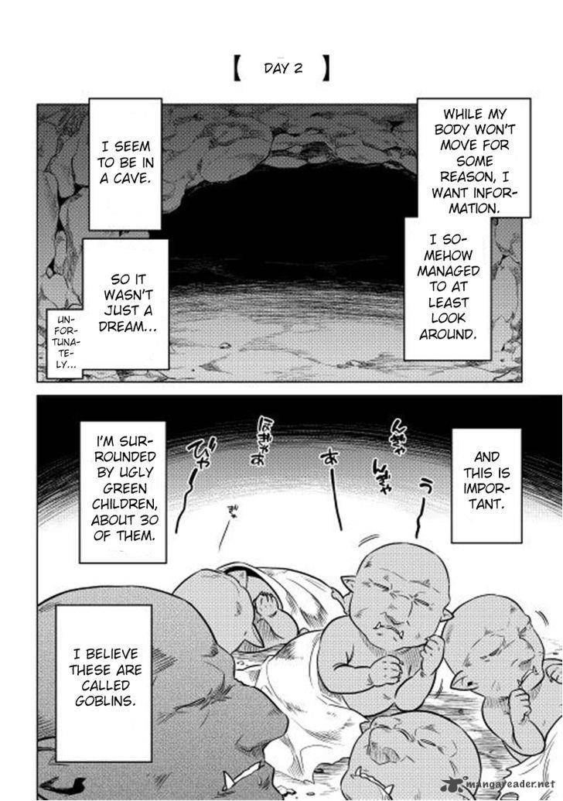

I woke up due to the sounds in my surroundings. When I opened my eyes, I tried to gather information, however, I couldn’t move my head for some reason. As a result, I wasn’t able to grasp a lot of information. Still, I was able to understand one fact. Although it’s regrettable, the story about reincarnating wasn’t a dream I saw after I got drunk.
With a little more effort, and with my limited vision, I managed to determine a few more facts. It appears that I'm inside a cave. Signs of it being handmade weren’t present, so the possibility of it being natural is high.
The feeling of the rags I used as a blanket was the worst. They felt stiff and they were clearly dirty. The soil on my back felt uncomfortable, and a pebble was digging into my skin so it hurt a little, though all of this doesn't matter.
More importantly...
There are a lot of ugly children who have green skin and sharp ears around me. Yeah, they are [ GoblinSmall Demon/Oni ]s. They were covered by cloths just like me and sleeping. There were about thirty of them in my visible range, twenty of them being the size of a human baby. And the others were the same size as a human child; adults I presume.
…Well, that was the conclusive evidence that I reincarnated. Considering that if I move my hands, I can see baby skin identical to that of the surrounding goblins', and on each of my five fingers sharp black nails are clearly visible. If I didn't reincarnate, then what else could it be?
In my past life I was an evolved human, an [ ESPer ], and I further upgraded to a strengthened human after undergoing a surgery, but now it seems I de-ranked to a goblin, a creature weaker than even a normal human. I seriously cried for a moment. The reason why I can't move my body properly is probably because I'm still a newborn. Today, like any other goblin child, I spent the day sleeping.I wasn’t escaping from reality at all.